Episode 131: Santa's Revenge! (or How ImaNewbie Saved Christmas)- Last week disaster struck as Santa arrived in Britannia only to be accosted by the evil GM Grinch. As this episode opens we find Santa, sans sleigh or presents and with his three remaining reindeer, bemoaning the misfortune that has befallen him. Just then, who should arrive but the perpetually optomistic ImaNewbie. Will he be able to help Santa Claus? Read on... Oh, and if you haven't seen last week's episode yet click HERE to read it first.
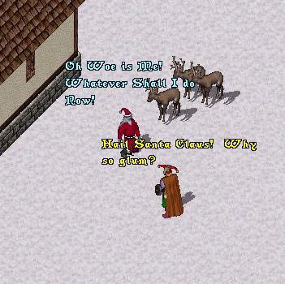
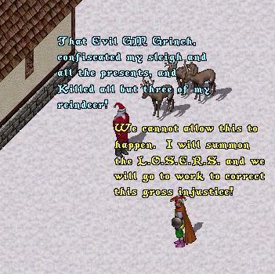
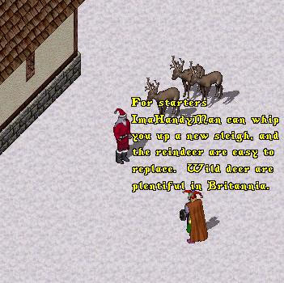
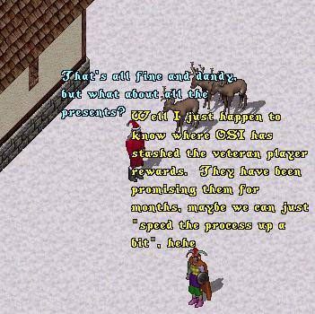
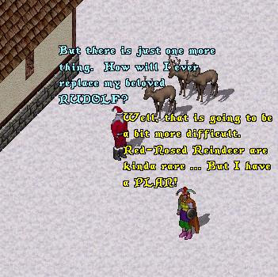
ImaNewbie bids farewell to Santa and heads off to gather the
required items to get Santa back on track. After commissioning
ImaHandyMan to build a new sleigh, ImaNewbie and ImaDufus
head off to the top-secret location where OSI has been storing
the ("are we ever gonna see them?") Veteran Rewards. Cleverly
disguised as members of the radical SLA (Santa Liberation
Army?), our daring duo quickly overpower the two blue-robed
individuals guarding the storehouse.
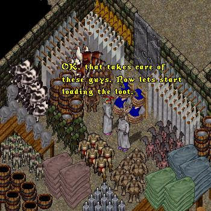
Having completed his mission, ImaNewbie
returns to Santa to show him the goods.
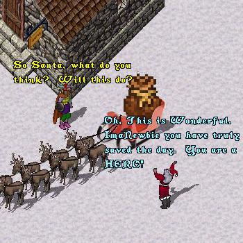
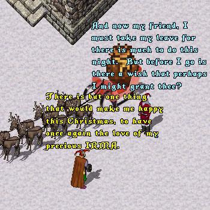
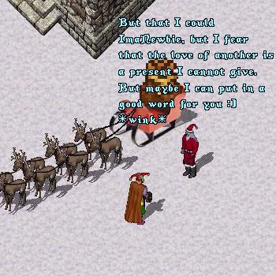
ImaNewbie heads out, as Santa boards his sleigh in
preparation for takeoff. But just then, who should
show up but that same evil red-robed individual
that caused him all the grief in the last episode.
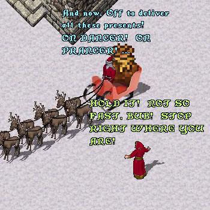
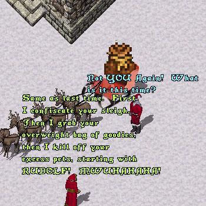
Oh No! It looks as though we are in for a repeat
of last week's episode ... or are we?
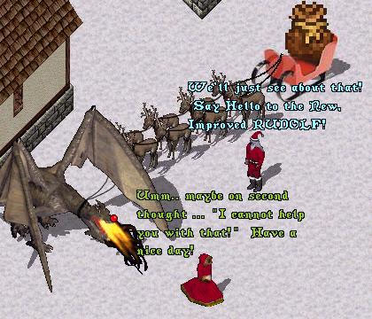
And so dear readers, we come to the end of our story. A happy ending no less. Santa heads out and delivers his cargo of gifts to the citizens of Britannia. ImaNewbie is a Hero, and we all live happily ever after ... Not bloody likely! 'Toon in next time for another episode of "As the Stomach Churns". Oh... and one more thing ...
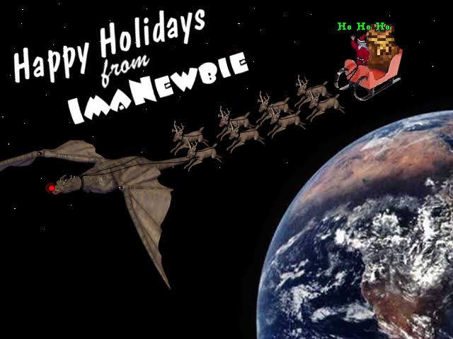